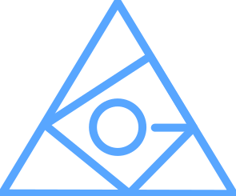

ago Programming LanguageFUNCTION IS CLASS, and CALLFRAME IS INSTANCE
ago is an object-oriented static programming language that treats functions as classes and call frames as heap-based instances—enabling persistent, resumable actions in semantic.
Inspired by Process Philosophy, ago believes that real-world "actions" should have a complete lifecycle state—containing both start and end points as well as intermediate processes. Traditional programming models bind the CallFrame to an underlying stack structure, making it invisible and far from the programmer. ago abstracts it as an object-oriented concept:
// Migrates to "downloader" node at runtime
fun downloadImages(images as LinkedList<string>) with RunAt::("downloader") {
for (var i = 0; i < images.size(); ++i) {
var url = images[i];
Trace.print("downloading " + url);
downloadImage(url);
}
}
// Runs on "page" node
fun runPage(page as int) as int with RunAt::("page") {
var result = fetchImages(page);
downloadImages(result.images);
}// backend Java code
public static void sleep(
NativeFrame nativeFrame, int ms) {
var host = nativeFrame.getRunSpace().getRunSpaceHost();
// Suspend the CallFrame
nativeFrame.beginAsync();
// Register callback; when fired,
// RunSpace resumes automatically
Object obj = host.setTimer(ms, nativeFrame::finishVoidAsync);
nativeFrame.setNativePayload(obj);
}
sleep(2000)
class User from Entity<User, long> {
metaclass{
class Name from VarChar::(100)
class Address from VarChar::(200)
class Age from BigInt
}
name as Name;
address as Address;
age as Age
}
fun createUser() as User {
var u = {User | name: "Tom", address: "liberation street 222", age: 20}
return u;
}
// Auto open transaction, save & commit on exit
var u = await createUser() via EntitySpace.new#();
// `query` is a special kind of function,
// the compiler automatically creates `userByName.Result` as typed result class
query userByName(
name as string?,
minAge as int?,
maxAge as int?,
sort as Sort[]? = [Sort[] | new Sort('u.name', 'asc')]
) {
sql{.
SELECT u.id, u.name, u.age FROM User u
WHERE name = :name AND age >= :minAge
AND age <= :maxAge
ORDER BY :sort ASC
.}
}
var it = await userByName('Tom', null, 30, default) via EntitySpace.new#();
for(var item in it){
Trace.print(item.name) // typed access
}class Generator<+R> from Function<R>{
private done as boolean {public get;}
}
generator fun foo(n as int) as int{
for(var i=0; i<n; i++){
yield i;
}
}
fun main(){
for(var i in foo(3)){
Trace.print(i); // 0, 1, 2
}
}fun sum(){
fun subTask1(){ sleep(100); }
fun subTask2(){ sleep(200); }
fun subTask3(){ sleep(300); }
fork subTask1()
fork subTask2()
fork subTask3() // auto-wait all done
}
fun main(){
var s = spawn sum()
sleep(100)
s.runspace.pause() // pause all children
sleep(2000)
s.runspace.resume() // resume all
}| Feature | Description |
|---|---|
| Function = Class | Every function derives from Function<R>; you can implement interfaces/traits, add fields. |
| CallFrame = Instance | Every invocation is an ordinary object on the heap — suspendable, serializable, interruptible. |
| Meta-classes & Parameterized Classes | Embed constant values in types (e.g., VarChar::(200)). |
| Scalarized ClassRefs | Treat classes as first-class values via classref. |
| Extended Boxing | Boxing works on subclasses of Boxer<T>; syntax like name as VarChar::(200) = 'John' is allowed. |
| Overloading at Invocation | Use f#1, f#2 — the compiler resolves at call time by argument types. |
| Structured Concurrency | fork, await, race(), awaitMany() — all built on CallFrames. |
| RunSpace Abstraction | One RunSpace per "thread" of execution; backable by thread pools, event loops, or virtual threads. |
| Persistence Hooks | Implement Slots to store state in PostgreSQL JSON columns, NoSQL, or even a blockchain. |
agoClass) and a Slots implementation.AgoClass.pc), caller reference, etc.git clone https://github.com/siphonlab/ago.git
cd ago
mvn clean package -DskipTestsCreate hello.ago:
fun main(){
Trace.print("Hello, ago!")
}Compile & run:
# compile
java -cp path/to/ago-compiler/target/ago-compiler-<ver>.jar \
-agocp ago-sdk/lang.agopkg -i hello.ago
# run
java -jar path/to/ago-engine/target/ago-engine-1.0-SNAPSHOT.jar \
-agocp ago-sdk/lang.agopkg ./fun f(){
Trace.print('wait notify')
await // yields control
Trace.print('resume f')
sleep(2000)
}
fun main(){
var c = fork f(); // start child RunSpace, get its CallFrame
sleep(2000); // built-in native function (async)
c.notify(); // resume the child
}class VarChar from String{
metaclass{
fun new(maxLength as int){}
}
}
class Person{
name as VarChar::(200)
}
fun main(){
var p = new Person()
p.name = 'John' // extended boxing
Trace.print(p.name)
}fun f#1(i as int){}
fun f#2(i as int, j as int){}
class Person{
name as string
fun name#get as string{ return this.name }
fun name#set(name as string){ this.name = name }
}The ago language opens a new domain with many interesting areas to explore. We need help with compilers, game engines, workflow engines, low-code platforms, and LLM applications. The project is currently in the contributor sign-up phase — feel free to register via an issue on GitHub.
ago is released under the Apache-2.0 license.
For questions or support, open an issue on GitHub.